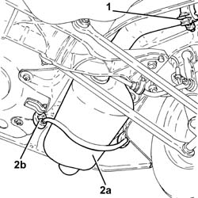
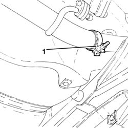
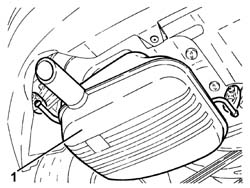
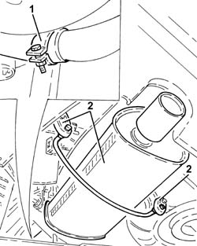

1076B20 rear exhaust silencer - r + r
- Path
- Procedures > 10 ENGINE > 1076 EXHAUST PIPES AND SILENCERS > 1076B exhaust pipes and silencers > 1076B20 rear exhaust silencer - r + r
- Kind
- repair procedure (removal / refitting; the operation number is the code)
- Applies to
- engines: 2.0 JTS, 1.9 JTD 16v, 2.0 JTS, 2.4 JTD 20v; all production periods
- Interactive page
- https://sloeber94.github.io/elrnDB-a156/en/#/3237750
Applies to: engines: 2.0 JTS, 2.0 JTS; all production periods
 Removing
Removing
 Refitting
RefittingPosition the vehicle on the ramp.
1. Loosen the collar fixing the rear exhaust silencer to the intermediate exhaust silencer.
2. Remove the rear exhaust silencer (2a) after having released it from the flexible mountings (2b) and from the intermediate exhaust silencer.

Applies to: engines: 2.0 JTS, 2.0 JTS; all production periods
Refitting
RemovingPlace the rear exhaust silencer back in its housing, connect it to the intermediate exhaust silencer and secure it to the flexible mountings.
Tighten the collar fixing the rear exhaust silencer to the intermediate exhaust silencer.
Remove the car from the ramps.
Applies to: engines: 1.9 JTD 16v; all production periods
Removing
RefittingPosition the vehicle on the ramp.
1. Loosen the collar securing the rear exhaust silencer to the rigid exhaust pipe.

Applies to: engines: 1.9 JTD 16v; all production periods
1. Remove the rear exhaust silencer after having released it from the flexible mountings and from the rigid exhaust pipe.

Applies to: engines: 1.9 JTD 16v; all production periods
Refitting
RemovingPlace the rear exhaust silencer back in its housing, connect it to the rigid exhaust pipe and secure it using the flexible mountings.
Tighten the collar fastening the intermediate exhaust silencer to the rigid exhaust pipe.
Remove the car from the ramps.
Applies to: engines: 2.4 JTD 20v; all production periods
Removing
RefittingPosition the vehicle on the ramp.
1. Loosen the collar securing the rear exhaust silencer to the rigid exhaust pipe.
2. Remove the rear exhaust silencer after having released it from the flexible mountings and from the rigid exhaust pipe.

Applies to: engines: 2.4 JTD 20v; all production periods
Refitting
RemovingPlace the rear exhaust silencer back in its housing, connect it to the rigid exhaust pipe and secure it using the flexible mountings.
Tighten the collar fastening the intermediate exhaust silencer to the rigid exhaust pipe.
Remove the car from the ramps.